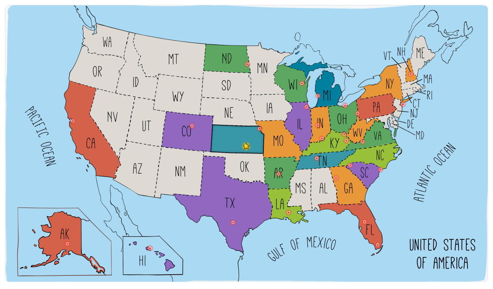

RUN50 DISPATCH · KANSAS
第26州 · 堪萨斯 · Hell on Gravel
堪萨斯埃尔多拉多 · 2025.06.28
Vlog 开场位｜Kansas
OPENING NOTE
风、牛群、麦田和砂石路，把一场小到只有十个人的全马跑成了冠军故事。
本文速记
风、牛群、麦田和砂石路，把一场小到只有十个人的全马跑成了冠军故事。

奖牌质感封面｜Kansas

第26州 · El Dorado
FIELD NOTE 01
自动驾驶，驶向地狱砂石
前言
这次出发，我们依旧开着特斯拉自动驾驶，一路向西，目的地是 堪萨斯（Kansas），
提起堪萨斯，大多数美国人的第一反应是：堪萨斯城酋长队（Kansas City Chiefs），

终点瞬间 · 赛事摄影
还有那个在超级碗上手感火热的小马哥，Patrick Mahomes。
我不太狂热橄榄球，还是去跑步，这次要跑他们家门口的碎石路。

奖牌照 · 赛事摄影
比赛的名字就够霸气：Hell on Gravel，直译就是 地狱砂石马拉松。
光听名字就让人膝盖发抖，但这场比赛有股独特的味道：

路上风景 · 赛事摄影
粗粝、原始、没有城市的喧嚣；只有风、牛群、麦田和无边无际的天空。
FIELD NOTE 02
风吹草浪的心脏地带
第26州 · 堪萨斯
堪萨斯（Kansas）被称为“美国的心脏地带（Heart of America）”，

路边竖起大拇指 @Arsenan
它几乎位于全美的正中心，从地图上看，形状像是一块被量得整整齐齐的方砖，

Gas station @Arsenan
平整、低调，却又代表着美国中部最真实的一面。
堪萨斯的地貌以大平原（Great Plains）为主，土地广阔而平缓，风是一年四季的主角。

烈日下的影子自拍 @Arsenan
开车穿州而过，窗外永远是金黄的麦浪、低矮的农舍，还有被风吹得弯腰的草。
夏天酷热、冬天寒冷，龙卷风时不时造访，堪萨斯也有着温厚的文化底色。

公园凉亭自拍 @Arsenan
电影《绿野仙踪》里的多萝西就来自堪萨斯，她在龙卷风里被吹到了魔法世界，
也让“Toto, we’re not in Kansas anymore.”成为美国人耳熟能详的经典台词。

酒店走廊 @Arsenan
说到城市：
托皮卡（Topeka） 是州府，地处中部，政府机构和历史建筑保存得很好。

傍晚长影 @Arsenan
威奇托（Wichita） 是最大城市，早年靠飞机制造业起家，被称为“航空之都”。
劳伦斯（Lawrence） 是大学城，堪萨斯大学的所在地，气氛年轻而多元。

落日时分 @Arsenan
堪萨斯城（Kansas City） 虽然部分跨到密苏里州，但影响力最大，是全州的经济与文化中心。
如果说美国的东部是历史的起点，西部是梦想的终点，那堪萨斯就是两者之间最真实的过渡地带。

营地一角 @Arsenan
这里没有大都市的光鲜，却有属于自己的辽阔与平静。
对我们来说，这次的第26州，就是在这片风声呼啸的平原上，亲身感受“地狱砂石”的力量。

营地车位 @Arsenan
FIELD NOTE 03
露营、抵达 埃尔多拉多
Chapter 1
这次我们依旧沿用上次的模式，露营加跑步。

池塘边 @Arsenan
上次的体验挺不错，所以这次继续。
一路上边开车边充电，顺便去便利店买吃的，已经驾轻就熟。

营地黄昏 @Arsenan
傍晚，我们来到伊利诺伊州的第一个营地。营地在一个小湖边，旁边还有篮球场。
环境挺清静，风里有点草香。这一晚睡得很好，天亮得早。

Golden RV @Arsenan
我在无人机和 Insta360 X5 的注视下，来了一场久违的个人篮球秀。
虽然好几年没摸球了，手感还在。几次出手都稳稳进框。

营地清晨 @Arsenan
离开时我才发现，营地的标志是个圣路易斯式的大拱门（Archway），
继续开车上路。终于要驶入堪萨斯的土地了。

路边标识 @Arsenan
窗外是一望无际的玉米地，几头懒洋洋的牛在树荫下歇着，
偶尔还能看到油井在远处慢悠悠地转着。

路上风景 @Arsenan
Siqi 看着窗外说：“这画面，像极了 Windows 桌面。”
朋友 Brad 推荐给我们一条堪萨斯 trail ，这次是没时间去了，

田野风景 @Arsenan
毕竟这次的重头戏，是那片真正的“地狱砂石”。

路边远景 @Arsenan
一共十几个小时，终于抵达了这次的目的地：El Dorado（埃尔多拉多）。
名字听起来像西语，意思是“黄金之地”，听着就很浪漫，也有点墨西哥味。

城市街景 @Arsenan
这小镇在堪萨斯的中南部，城市不大，但干净、安静。
我们先去了一个办公室取装备，比赛规模虽然小，但很用心。

街角一幕 @Arsenan
拿到号码布和比赛衣服，顺便看了明天的奖牌，造型帅气，金属质感十足，
之后我们去了镇上一家墨西哥餐厅 Anita’s Mexican Restaurant。

市中心路口 @Arsenan
这是一栋红顶小砖房，门口停着几辆老式车。店里灯光昏黄，墙上挂着西班牙画作，
空气里全是烤肉和辣椒的香味。我点了一个“战车套餐”，

Hell on @Arsenan
食物装在一个雕刻成石车轮形状的容器里，上桌时还滋滋作响，
有点仪式感，也特别地道。味道比想象中好，果然小镇的墨西哥菜才是真正的本地味。

Mexican restaurant @Arsenan
吃饱喝足，我们先去赛道探探路，砂石路果然难开车，然后我们就前往 El Dorado 东边的露营地 Archway RV Park。
营地背后有一条小河，旁边是木桥和草地，环境清新自然。我们在木桌上吃了点小零食，风带着青草味，从河面吹来。唯一的槽点是洗澡间的热水系统有点不给力，

清晨风景 @Arsenan
但想想大多数人都开房车，也就释然了。露营地可以给车充电，这点挺方便，
特斯拉在夜里静静补能，我们也在帐篷里安稳入睡。

Second bite @Arsenan
FIELD NOTE 04
Hell on Gravel · 十个人的砂石路马拉松
Chapter 2
第二天清晨，天还没完全亮，我们就出发去起点了。

Shaded park @Arsenan
这是我第一次用 Insta360 X5 当主力设备拍摄整场马拉松，心里既兴奋又有点忐忑，不知道能不能记录好这场“地狱之旅”。
比赛起点设在 El Dorado State Park 东侧的 East Park Trail，也是镇上最漂亮的地方之一，旁边是湖泊和树林，

桥上风景 @Arsenan
空气里带着点湿度，早晨的风有点凉。“Hell on Gravel” 是一场非常特别的比赛。
路线几乎就是一条笔直的碎石路，从 El Dorado 一路通往 Butler 县的乡间地带，

桥面路段 @Arsenan
中途折返，没有观众，只有几座老旧的木桥和一望无际的平原。
名字里的 “Hell” 并不是夸张。这类砂石路马拉松在美国中西部挺有代表性，

过桥瞬间 @Arsenan
起源于早期的越野骑行赛事，后来发展出跑步版本。跑在这上面，脚底不稳、阳光刺眼，对心理和体力都是考验。
早上六点，赛事总监喊我们集合。全马选手加起来不到十人，真的是“一排就能合影完”的规模。

路上自拍 @Arsenan
我穿着蓝色的阿森纳球衣，看上去还挺精神。起跑信号一响，所有人冲了出去，直奔小树林。
这段树林路面是压实的土路，两边树枝交错，阳光从缝隙里打下来，有点越野的味道。

Pointing out @Arsenan
跑出树林后，是一座木桥，桥头就蹲着一位摄影师，拍得比很多大赛都专业。
跑过桥，地狱就开始了。脚下换成了真正的碎石路。太阳从东方升起，光线打在平原上，

起点现场 @Arsenan
像是给每一块石头都镀了层金。两边是无边的农田，空气清新，风吹麦浪。
我心情挺好，配速稳定在 5 分多一点。五公里左右到了第一个补给点，几张折叠桌、几桶水，还有笑容灿烂的志愿者。

爬坡前的砂石路 @Arsenan
我状态还不错，就摆手继续前进。摄影师又出现在前方，我赶紧摆了个姿势。

路上自拍 · 2 @Arsenan
不久后，我超过了一位穿越野包的跑者，他明显经验丰富，步伐稳、节奏均匀。
我超他的时候还谦虚地点了个头，没多久我就拉开距离。

桥下阴影 @Arsenan
十英里左右，天气开始热了起来。我在第二个补给点喝了几口水，挤了个能量胶。
没想到刚一抬头，那位被我超过的越野哥又出现了，

清晨风景 · 2 @Arsenan
他轻轻松松跑在我前面，背包里挂着自己的水袋，根本没停过。
太阳越来越烈。碎石在鞋底碾出的声音变成了节奏。

车窗风景 @Arsenan
我低头看着那条笔直的砂石路，它在阳光下延伸到天边，像一条通往地狱的路，也像一条通往荣誉的路。
FIELD NOTE 05
晒、热与冠军的诞生
Chapter 3
我稳住自己的节奏，不急不躁。没一会儿，我又把那个越野选手超过了，而这一别，他再也没能追上来。前面的补给点有冰可乐，这在大热天简直是神级的存在。那一口下去，爽啊！

清晨风景 · 3 @Arsenan
路边偶尔有大家伙轰隆隆开过，那不是卡车，而是农业巨兽：喷洒农药的高轮农机，轮胎比我还高，开过的时候扬起的尘土像电影特效。我给司机比了个“rock”手势，他也冲我举了个大拇指，像两个在地狱公路上相遇的战士。
不知不觉到了折返点，地上插着个黄色牌子写着“MARATHON TURN AROUND”，意味着我已经跑出了一半。牌子旁边的志愿者是一位老奶奶，笑得很亲切，就是差点把我当成50公里选手，准备让我接着跑下去。

清晨风景 · 4 @Arsenan
回程的路稍微热闹一点，能看到对面方向的跑者。有人已经面无表情戴上了痛苦面具，大概是顶着正面的太阳跑太久，晒得不轻。我挨个举手打招呼，拍了几个high five，互相加点士气。
摄影师又出现了，还是那个戴牛仔帽的大哥，开着SUV一路追着我们拍。我能听到相机快门在“啪啪啪”响，专业得不行。后来我看了他拍的照片，光线、角度、姿势都完美，那些画面，正是我跑的时候没时间好好看的风景：

Watch check @Arsenan
路边的小狗趴在树荫下乘凉，乌龟慢悠悠地往水沟里爬，车窗上贴着一只蚂蚱不肯走，还有志愿者穿着橘色背心在阳光下闪闪发亮。
绿色的灌木、灰白的砂石路、蓝得晃眼的天，一切都有种中西部特有的荒凉美。那种人与自然既对抗又共处的感觉。

Dead tree @Arsenan
回程路上我知道，我是全马的领头羊。虽然没有观众，也没有现场播报，但我心里暗暗说：“冠军，就在前面。”

路边远景 · 赛事摄影
不过天气越来越热，脚下的碎石越来越松，补给也开始变得重要。每次看到桌上摆着水，我都要灌几口；没补给的时候，就盯着偶尔出现的志愿者，跟他们要上一杯。大家都特别友好，笑着递水，还和我说“Keep going”。
跑着跑着，我发现后面出现了一个人影，越来越近。我的心开始紧张，太阳底下的影子也越来越长。看样子是有人要追上来了。我试着加速，但腿不太听话，最后那人果然超了我。

Official front · 赛事摄影
我心里叹了口气：好吧，冠军就让给他吧。
可再仔细一看，咦，这哥们我没见过，原来是50公里组的大神！顿时豁然开朗，我又开心了，恢复了士气：那就继续领头吧，全马组的冠军，必须保住！

清晨风景 · 赛事摄影
但后面的几英里真的难。太阳像烤炉，地面都在发光。比赛前半段的新鲜感早就褪去，剩下的只有干、热、和无尽的石子滑动。
终于，前方出现一个志愿者奶奶，她指着右边说“Almost there, just a few turns!”

山路风景 @Arsenan
我点头照做，可惜太自信，拐错了。结果一不小心跑进了人家农田里。草越来越高，路越来越窄，我心想坏了。
只能硬着头皮继续往前，想着早晚能回到主路。跑了好一阵，GPS都快失灵了，四下没人，我灵机一动：

Golden official · 赛事摄影
“我的特斯拉在起点，那我就朝着车的方向跑吧。”
靠着方向感，我终于重新爬上公路，又在镇子里晃了一段。脚底砂石全是火，连呼吸都烫。

落日时分 · 赛事摄影
然后，我看见了终点拱门。志愿者们都愣住了，看着我从完全相反的方向跑回来。
我一边喘气一边抱怨：“我跑错了！我刚刚绕进农田了，要不这成绩能更好！”

前方长路 @Arsenan
可最意外的是，他们随口说了一句：“You’re the first full marathon finisher!”
我愣了三秒，冠军？尊嘟假嘟？看来今年的选手水平确实朴实无华。

转场路上 @Arsenan
我亮出手表，展示我的GPS数据：

路上风景 · 6 @Arsenan
“看吧，我可比全马还多跑两英里，这冠军拿得一点都不亏！”
太阳正好照在终点的草地上，风吹动那面写着“Hell on Gravel”的旗子，

Coke can @Arsenan
那一刻我突然觉得：地狱也没那么可怕，只是有点热罢了。
FIELD NOTE 06
跑完吃个韩餐，回家
Chapter 4
比赛结束，我在公园的木亭下拉伸。

路上风景 · 7 @Arsenan
桌上摆着冰镇汽水和橙子，阳光从屋顶的缝隙里钻进来，一切都亮亮的。
拿到了那块巨大的奖牌，

Giant sprayer @Arsenan
火焰、齿轮、碎石，全都刻在一块金属板上，看着就有种“跑完地狱”的气势。
冠军还有一个木头做的特别奖牌，橄榄木的纹路很好看，摸上去很有质感。

Yellow course @Arsenan
我和 Siqi 在亭子里拍了几张照片，又象征性地拉伸了几下，然后开着特斯拉一路往堪萨斯城方向去。
第一站照例是 Planet Fitness 洗澡站。那水一冲，整个人像被刷新了一样，

Running with · 赛事摄影
皮肤终于从“碎石风干模式”切回“人类模式”。
接着我们在堪萨斯市中心找了一家韩餐厅，点了辣豆腐汤和炒粉丝。

赛道跑者 @Arsenan
又辣又香的，瞬间补回跑掉的所有能量。吃饱后，我们又去了街角的彩色墙拍照。

路上跑者 @Arsenan
墙上是粉色的怪兽、绿色的蜥蜴，我穿着比赛发的橙色 T 恤，胸前挂着巨大得有点夸张的奖牌，
背后停着一辆白色 Rivian 电车。离开堪萨斯，我们上了 I-70 高速。

补给站 · 赛事摄影
晚上住了一家小旅馆，第二天一早继续往东开。
快到圣路易斯时，远处的 Gateway Arch 在阳光下发亮，

车窗风景 · 赛事摄影
天空的云层很低，风筝在空中飘着，红绳子随风舞动。
特斯拉自动驾驶稳稳地行进，我靠在座椅上，看着窗外的田野从金黄变成暗绿。

前方长路 · 赛事摄影
下午回到家，天居然还没黑。
FIELD NOTE 07
不谦虚，我就是冠军
后记
这次堪萨斯的比赛，说难也不难，说容易也真不容易。

Official arms @Arsenan
赛道就是一条直线，碎石、热风、尘土，一路到底。
没有观众，没有阴凉，也没音乐。有的只是你自己，和那条永远跑不完的路。

路上自拍 · 赛事摄影
十个人参赛，我拿了第一。但冠军就是冠军，跑得快就是跑得快。
后来我也在想，我为什么总要强调“就十个人”？

Course dog @Arsenan
好像在给自己找理由，怕别人觉得这个冠军不值钱。
这可能是一种很典型的中国式习惯：从小被教育要谦虚，要低调，说自己“还行吧”“运气好”。

补给桌前 · 赛事摄影
可在美国，大家更习惯直接说：“我干得不错。”

转场路上 · 赛事摄影
不是自夸，而是一种对结果的尊重。你做到了，就该承认。
我也慢慢明白了，过分谦虚其实也是另一种自我否定。

Grasshopper close @Arsenan
我们常说过程重要、结果无所谓，可现实很多时候就是结果导向的。
你跑得最快，就该承认自己厉害。哪怕只有十个人，你依然是那十个人里最先冲线的那个。

浇水降温 @Arsenan
有时候，人得学会接受自己的好。不用掩饰，也不用贬低。冠军就是冠军，这没什么好回避的。
这是我 Run50 的第 26 个州。还差二十四场，这事儿还没干完。

冲线瞬间 · 赛事摄影
“地狱”都跑过了，还有啥可怕的呢？
RUN50 FINISH LINE
这一站，收进地图。
这场小比赛的妙处就在于它不装大。十个人的全马，风、牛、砂石路都是真的，冠军也是真的。
26
RUN50
10
MARK
CHAMP
NOTE
小比赛常常没有大场面的声浪，但会留下很多奇怪又鲜活的细节。人少、路野、补给随缘，偏偏就是这种比赛，最容易在很久以后还被想起来。
文字 / 编辑 / 排版 · Arsenan